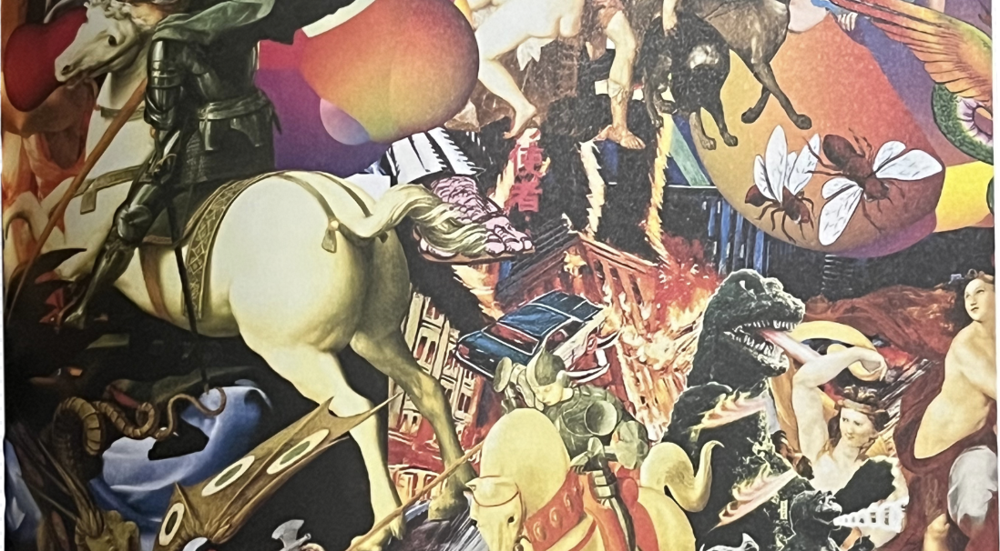
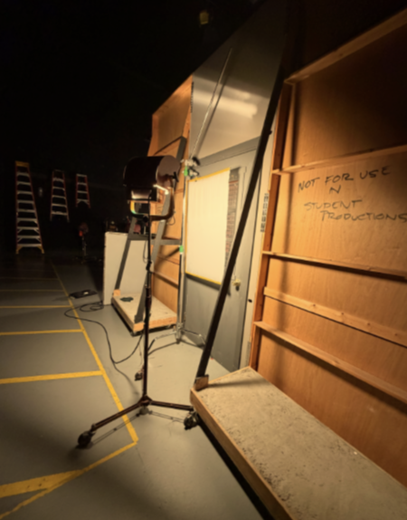
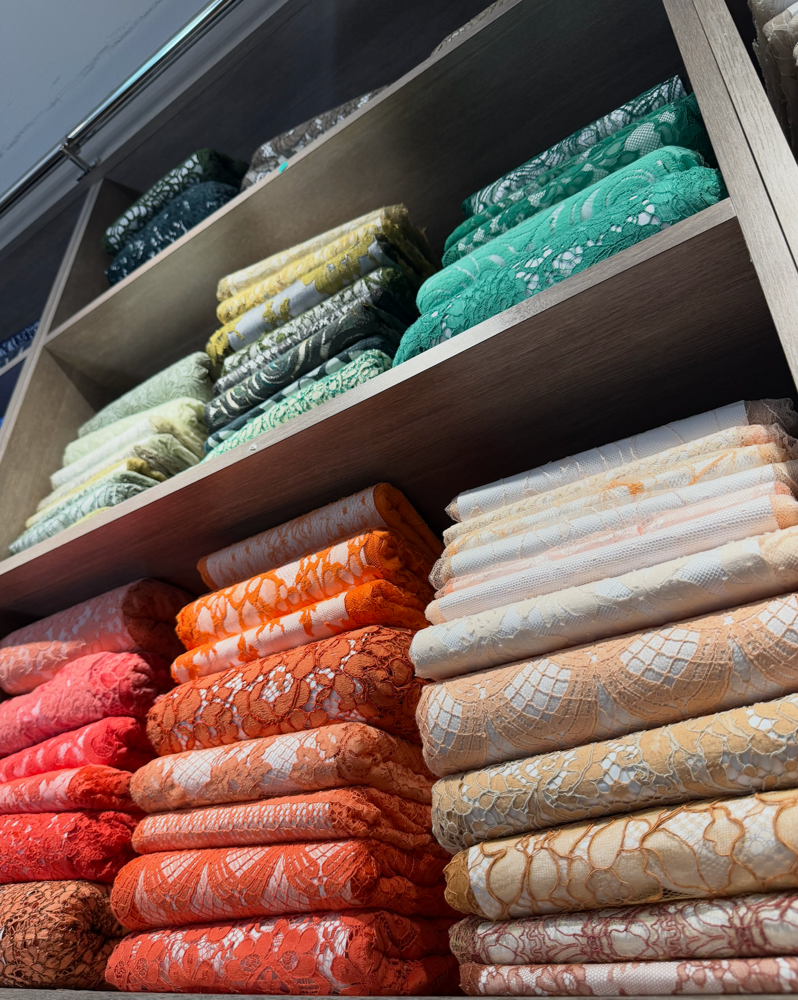
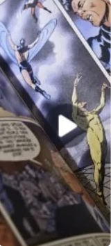

Internships

Connecting Ambition WithOpportunity, Everywhere
Learn, connect, and enjoy tailor made
enrichment opportunities from any industry.
Every Field,
Every Professional,
No Experience Required
Every Professional,
No Experience Required
What is ACASO?
Career exploration,
Career exploration,
made accessible.
ACASO is a free career exploration web app built for students. Discover opportunities, learn directly from professionals, and explore where your interests can take you—no experience or existing connections required.
Enrichment Opportunities
We classify enrichment opportunities as any material, practice or
experience you can learn from, such as:
Workshops
Materials
Global Connection
Here, you’re not defined by
your zip-code
Insider Access
Explore videos, creative materials, and advice from professionals in the industries you choose.



Independent, Never Alone
Access trusted guidance, career conversations, academic support, industry panels, interviews and professional insight—all in one place.
Getting Started
1
Share your interests
This helps us build your portfolio and
only send you information relevant to
your needs.
2
Goals
Sharing your goals helps us provide better advice and recommendations. We track market growth to understand the needs of tomorrow, convergent markets to understand what new skills could be useful and overall connected trends that could help you reach your goals.
3
Explore, Save, Attend
That's it! You’re free to explore the materials and take the first step towards your goals.
FAQ
Questions are part of exploring.
Here are a few things students should know before getting started.
Do I need experience to use ACASO?
No. ACASO is designed for students who are still exploring. You can start with an interest, a question, or no experience at all.
What kinds of opportunities can I find?
ACASO can surface internships, workshops, programs, interviews, professional resources, practice materials and other experiences that help you explore a field.
What if my interests change?
That is expected. Your profile is designed to evolve with your interests, goals, experiences and feedback so recommendations can change with you.
Does ACASO cost students money?
ACASO's goal is to make exploration accessible. Individual opportunities may have their own requirements or costs, which should be clearly identified before you pursue them.
Our circumstances
don’t define us
We believe you have the desire, ambition and talent to achieve your goals. Let us help you get there, no strings attached.